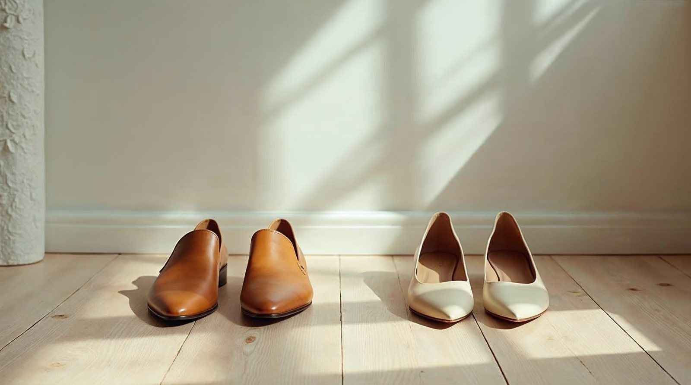
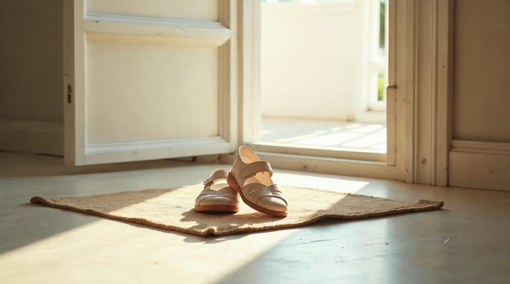
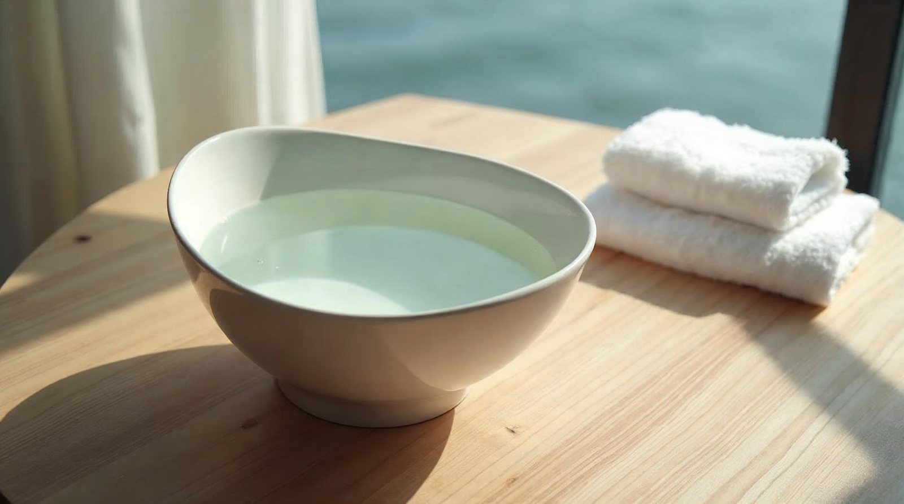
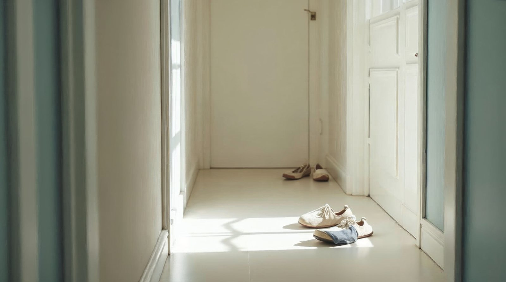
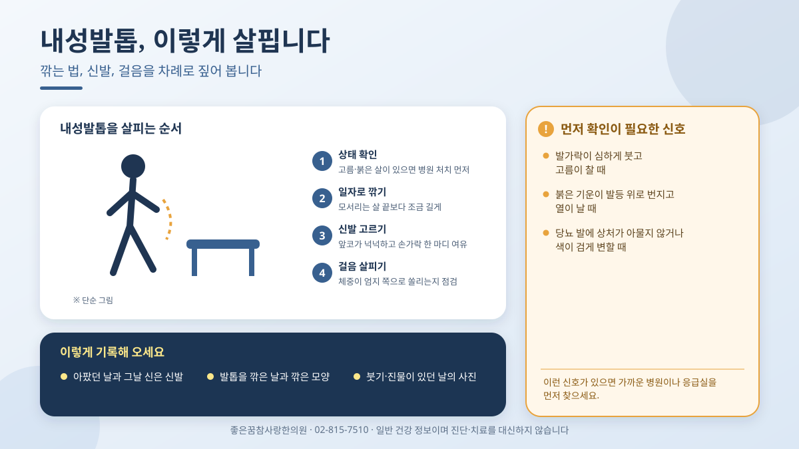

이종호 한의사 감수좋은꿈참사랑한의원 대표원장 (한의사 면허번호 19769)발행 2026-11-26 · 수정 2026-11-27
이 글의 차례
아침에 구두를 신고 몇 걸음 걷는데 엄지발가락 옆이 콕 찔리듯 아파요. 저녁에 양말을 벗어 보면 발톱 가장자리 살이 빨갛게 부풀어 있고, 살짝만 눌러도 욱신거립니다. 며칠 전 발톱을 바짝 깎은 게 떠오르면서, 그때 모서리를 너무 깊이 잘랐나 싶어지시죠.
내성발톱은 작은 자리의 문제 같지만, 겪어 보신 분은 그 아픔을 잘 아세요. 이불이 스치기만 해도 신경이 쓰이고, 걸을 때마다 발가락에 힘을 덜 주려다 보니 걸음걸이가 어색해지거든요. 진료실에서 무릎이나 허리 얘기를 하시다가 "사실 발톱 때문에 제대로 못 걸어요" 하고 털어놓으시는 분도 계세요.
발톱이 살을 파고드는 데는 대개 이유가 있어요. 발톱을 깎는 방법, 신발의 앞코 모양, 걸을 때 발가락에 실리는 힘, 발톱 자체의 모양이 함께 얽혀 있거든요. 한 가지만 바꿔서는 다시 되풀이되기 쉬워서, 저는 이 네 가지를 차례로 짚어 보시길 권해요.
다만 여기서 두 가지는 나눠서 보셔야 해요. '발톱이 살을 누르는 것'과 '이미 곪은 것'은 다른 얘기예요. 고름이 차고 살이 많이 부어올랐다면, 생활 습관을 바꾸기 전에 발톱과 살을 직접 처치할 수 있는 병원 진료가 먼저예요. 이 글에서는 어떤 때 병원이 먼저인지, 그리고 그 뒤로 무엇을 함께 살피면 좋은지를 차례로 정리해 볼게요.

내성발톱은 어떤 상태인가요
내성발톱은 발톱의 옆 가장자리가 주변 살 속으로 파고들어 염증과 통증이 생긴 상태입니다. 엄지발가락에 가장 흔하고, 안쪽이나 바깥쪽 한쪽 모서리에 생기는 경우가 많습니다. 처음에는 눌렀을 때 살짝 아픈 정도지만, 그대로 두면 붓고 붉어지며 고름이 차기도 합니다.
진행되는 모습은 대략 세 단계로 나눠 볼 수 있습니다. 처음에는 발톱 옆 살이 약간 붉고 신발에 눌릴 때만 아픕니다. 그다음에는 붓기와 열감이 뚜렷해지고 진물이나 고름이 비칩니다. 더 오래되면 파고든 자리 주변으로 붉은 살이 덩어리처럼 자라 올라와 쉽게 피가 나기도 합니다.
비슷하게 발톱이 말려 들어가는 모양을 따로 말려 있는 발톱이라고 부르기도 합니다. 발톱이 양옆으로 둥글게 말려 살을 집게처럼 누르는 모양인데, 나이가 들거나 발톱 무좀으로 발톱이 두꺼워지면서 생기는 경우가 많습니다. 모양에 따라 병원에서 권하는 처치가 달라집니다.
왜 발톱이 살을 파고들까요
내성발톱은 한 가지 이유보다 여러 습관이 겹쳐서 생기는 경우가 많습니다. 아래 가운데 해당하는 것이 몇 개인지 세어 보시면, 무엇부터 바꿀지 정하는 데 도움이 됩니다.
- 발톱을 둥글게, 또는 모서리를 깊이 파내듯 짧게 깎는 습관
- 앞코가 좁고 뾰족한 구두나 발에 비해 작은 신발
- 하이힐처럼 발가락 쪽으로 체중이 쏠리는 신발을 오래 신는 경우
- 축구, 등산, 달리기처럼 발끝에 반복해서 충격이 가는 운동
- 발톱 무좀이나 나이로 발톱이 두꺼워지고 말려 있는 경우
- 걸을 때 엄지발가락 안쪽으로 체중이 굴러 들어가는 걸음
가장 흔한 이유는 발톱을 깎는 방법입니다. 모서리를 둥글게 바짝 잘라 내면 당장은 시원해 보이지만, 발톱이 다시 자라면서 그 끝이 살 속으로 파고들 길이 생깁니다. 특히 아픈 자리를 피하려고 모서리를 더 깊이 파내는 일을 되풀이하면 점점 더 깊이 파고드는 악순환이 생깁니다.
걷는 방식도 영향을 줍니다. 평발이거나 발 아치가 무너진 분, 엄지발가락이 바깥으로 휘는 무지외반이 있는 분은 걸을 때 엄지발가락 옆면에 압력이 몰리기 쉽습니다. 그 압력이 날마다 살을 발톱 쪽으로 밀어 올리면서 파고드는 일을 거듭니다.
발톱 주변 불편, 무엇과 헷갈릴까요
발톱 주변이 붓고 아프다고 모두 내성발톱은 아닙니다. 비슷해 보이는 몇 가지를 나란히 놓고 보면 구분에 도움이 됩니다. 정확한 판단은 직접 보고 하는 것이니, 아래는 참고로만 봐 주세요.
발톱 무좀은 발톱이 두꺼워지고 누렇거나 하얗게 변하며 잘 부서집니다. 그 자체로는 크게 아프지 않지만, 두꺼워진 발톱이 신발에 눌리거나 말려 들어가면 내성발톱과 함께 오기도 합니다.
통풍은 엄지발가락 뿌리 관절이 갑자기 붉게 붓고 몹시 아픈 경우가 많습니다. 발톱 옆이 아니라 발가락이 시작되는 관절 쪽이 아프고, 밤사이 갑자기 시작되는 일이 흔해서 내성발톱과는 자리와 양상이 다릅니다.
티눈이나 굳은살은 발가락 사이나 발바닥에 단단한 각질이 생겨 눌릴 때 콕 찌르듯 아픕니다. 발톱 옆이 아니라 뼈가 튀어나온 곳이나 신발에 쓸리는 곳에 생기는 경우가 많습니다.
병원 처치가 먼저 필요한 때는 언제인가요
붓기와 붉은 기운이 며칠 지나도 가라앉지 않고 오히려 심해진다면, 생활 습관만으로 버티기보다 병원 진료를 받으시는 것이 좋습니다. 고름이 비치거나, 파고든 자리 주변으로 붉은 살이 자라 오르거나, 걸을 수 없을 만큼 아플 때도 마찬가지입니다.
병원에서는 상태에 따라 염증을 가라앉히는 약을 쓰거나, 파고든 발톱 가장자리를 일부 잘라 내거나, 발톱이 자라는 방향을 바로잡는 교정 기구를 쓰기도 합니다. 어떤 방법이 맞는지는 발톱 모양과 염증 정도를 직접 보고 정하는 것이어서, 진료를 받으며 상의하시면 됩니다.
처치를 받은 뒤에는 상처가 아물 때까지 안내받은 대로 소독하고, 앞이 트이거나 넉넉한 신발을 신어 발가락이 눌리지 않게 해 주세요. 이 시기에는 아픈 발을 감싸느라 반대쪽 다리와 허리에 무리가 가기 쉬우니, 오래 서 있거나 무리하게 걷는 일은 잠시 줄이시는 것이 좋습니다.

아이와 어르신은 이런 점을 더 살핍니다
성장기 아이와 청소년은 발이 빠르게 자라서, 몇 달 전에 산 운동화가 어느새 작아져 있는 경우가 많습니다. 운동을 많이 하는 아이라면 계절마다 신발 크기를 확인해 주시고, 발톱을 바짝 깎아 주는 습관이 있다면 일자로 조금 남기는 방법을 함께 알려 주세요.
어르신은 발톱이 두꺼워지고 단단해져서 깎기가 어렵고, 허리를 굽혀 발끝까지 손이 닿기 힘든 분도 많습니다. 그러다 보니 발톱이 길게 자라 말려 들어가거나, 무리하게 깎다가 상처가 나기도 합니다. 혼자 깎기 어렵다면 가족이 도와드리거나 병원에서 상의하시길 권합니다.
먼저 이렇게 여쭙니다
처음 오시면 저는 대략 이런 순서로 여쭙니다. 미리 생각해 오시면 진료 시간을 더 알차게 쓰실 수 있습니다.
- 언제부터 아팠고, 처음 아프기 전에 발톱을 깎았거나 발을 부딪친 일이 있었나요?
- 발톱은 평소 어떤 모양으로, 얼마나 자주 깎으시나요?
- 주로 신는 신발은 어떤 모양이고, 하루에 몇 시간 신으시나요?
- 걷거나 운동할 때 엄지발가락 쪽에 힘이 많이 들어간다고 느끼시나요?
- 예전에 같은 자리를 병원에서 처치받은 적이 있나요?
- 당뇨나 혈액순환, 피를 묽게 하는 약을 드시나요?
같은 자리가 몇 번째 아픈 것인지도 중요합니다. 처음이라면 깎는 법과 신발을 바꾸는 것으로 시작해 볼 수 있지만, 해마다 되풀이된다면 발톱 모양 자체를 교정하는 방법을 병원에서 상의해 보시는 것이 좋습니다.

일상에서 먼저 해 볼 수 있는 것
붓기가 심하지 않고 고름이 없는 초기라면, 아래 습관을 먼저 해 보실 수 있습니다. 이미 고름이 찼거나 붉은 살이 자라 올라왔다면 혼자 해결하려 하지 마시고 병원 진료를 먼저 받아 주세요.
- 발톱은 일자로 깎고, 모서리는 살 끝보다 조금 길게 남기기
- 모서리를 파내듯 깊이 자르거나 손으로 뜯지 않기
- 앞코가 넉넉해 발가락이 움직일 수 있는 신발 고르기
- 굽이 높은 신발은 신는 시간을 줄이고, 오래 걸을 때는 운동화로 바꾸기
- 발을 씻은 뒤 발톱 주변까지 잘 말리기
- 양말은 발가락을 조이지 않는 넉넉한 것으로 신기
발톱은 목욕 뒤 발톱이 조금 부드러워졌을 때 깎으면 갈라지지 않고 깔끔하게 잘립니다. 손톱깎이보다 날이 곧은 발톱깎이를 쓰면 일자로 자르기가 수월합니다. 발톱 끝이 발가락 끝과 비슷한 길이가 되도록 남기는 것이 기준입니다.
신발은 오후에 고르시길 권합니다. 오후에는 발이 조금 부어 있어서 그때 맞는 신발이 하루 종일 편합니다. 신어 보았을 때 가장 긴 발가락 앞으로 손가락 한 마디 정도 여유가 있고, 발가락을 위아래로 꼼지락거릴 수 있으면 알맞은 크기입니다.
미지근한 물에 발을 잠시 담가 두면 살이 부드러워지고 통증이 덜어지는 분도 계십니다. 다만 상처가 있거나 고름이 비치는 경우, 당뇨가 있어 감각이 둔한 경우에는 물에 오래 담그는 것보다 병원 처치가 먼저입니다.
한의원에서 함께 살필 수 있는 경우
파고든 발톱 자체를 잘라 내거나 교정하는 처치는 피부과나 외과에서 하는 것이 맞습니다. 한의원에서는 그와 나란히, 발톱에 압력이 몰리게 만드는 걸음과 발의 부담, 아픈 발을 감싸느라 생긴 다른 곳의 불편을 함께 살핍니다.
- 엄지발가락이 아파 걸음걸이가 바뀐 뒤로 발목, 무릎, 허리가 뻐근해진 경우
- 평발이나 발 아치가 무너져 엄지발가락 쪽으로 체중이 쏠리는 경우
- 오래 서서 일해 저녁이면 발이 붓고 종아리가 단단해지는 경우
- 발톱 처치 뒤 회복하는 동안 발 전체가 무겁고 피로한 경우
- 손발이 차고 발에 땀이 많아 발 피부가 쉽게 짓무르는 경우
좋은꿈참사랑한의원에 오시면 모든 분의 맥을 먼저 짚고, 아래 '먼저 확인이 필요한' 신호가 없는지도 함께 봅니다. 그다음 서 있는 자세와 걷는 모습을 함께 보며 발목과 무릎, 골반이 어떻게 체중을 나누고 있는지 살핍니다.
진찰한 내용을 바탕으로 신발과 걸음에서 바꿔 볼 것 하나와 함께 침, 추나, 한약 상담 가운데 지금 상태에 맞는 것을 정합니다. 한약을 상의할 때는 드시는 약을 모두 확인하고 신중하게 정합니다. 병원에서 처방받은 항생제나 연고는 상의 없이 멈추지 않으시도록 안내합니다.
걸음을 살필 때는 맨발로 몇 걸음 걸어 보시게 하고, 평소 신는 신발의 밑창이 어느 쪽으로 닳았는지도 함께 봅니다. 밑창 안쪽 앞부분이 유난히 많이 닳았다면 엄지발가락 쪽으로 체중이 쏠리고 있다는 단서가 됩니다. 가장 자주 신는 신발을 신고 오시면 큰 도움이 됩니다.
발가락과 발바닥의 작은 근육을 깨우는 간단한 움직임도 함께 알려 드립니다. 앉은 자리에서 발가락을 쫙 폈다 오므리기, 바닥의 수건을 발가락으로 끌어당기기처럼 집에서 할 수 있는 것들입니다. 발이 체중을 고르게 나눠 받도록 돕는 작은 습관입니다.
이렇게 기록해 오시면 상담이 쉬워집니다
발톱 통증은 신발과 활동에 따라 하루하루 달라집니다. 2주 정도만 간단히 적어 보시면 무엇이 통증을 키우는지 한눈에 보입니다.
- 아팠던 날과 그날 신었던 신발, 걸은 시간
- 발톱을 깎은 날과 깎은 모양
- 붓기, 붉은 기운, 진물이 있었던 날의 사진
- 운동이나 등산처럼 발끝에 힘이 많이 간 날 표시
- 발목, 무릎, 허리에 새로 생긴 불편
사진은 같은 각도, 같은 밝기에서 찍어 두시면 변화를 비교하기 쉽습니다. 처치를 받으셨다면 언제, 어떤 처치를 받았는지도 함께 적어 주세요. 처방받은 약이 있다면 약 봉투도 챙겨 오시면 좋습니다.

오래 편안한 걸음을 위해
오래 편안한 걸음을 위해
내성발톱은 작은 자리지만 걸음 전체를 바꿔 놓을 수 있어요. 아픈 발가락을 피해 걷다 보면 다른 관절이 대신 무리를 하게 되고, 그 불편이 오래 남기도 하거든요. 그래서 저는 발톱만이 아니라 신발과 걸음을 함께 봐요.
발은 하루 수천 걸음을 묵묵히 받아 내는 곳이에요. 아프기 전까지는 잘 들여다보지 않게 되는데, 원래 다들 그래요. 잠들기 전 잠깐 양말을 벗고 발가락 사이와 발톱 주변을 살펴보는 것만으로도 큰 불편을 미리 알아챌 수 있어요.
걸음과 무릎, 발목이 덜 지치게 살피는 건 제가 할게요. 대신 하나만 부탁드려요. 발톱을 일자로 깎고 모서리를 조금 남겨 두세요. 딴 건 하시던 대로 편하게 하셔도 돼요.
다음에 오시면 그동안 신었던 신발과 걸음이 어땠는지부터 함께 살펴봐요. 궁금한 건 그냥 편하게 물어보세요.
이런 증상은 먼저 확인이 필요합니다
- 발가락이 심하게 붓고 고름이 차며 붉은 기운이 발등 위로 번지고 열이 나는 경우
- 당뇨나 혈액순환 문제가 있는 발에 상처가 아물지 않거나 색이 검게 변하는 경우
이런 신호가 있으면 한의원보다 가까운 병원이나 응급실을 먼저 찾으세요.
함께 읽으면 좋은 글
- 발바닥 굳은살과 티눈이 걸을 때마다 콕콕 찌르듯 아플 때는 어떻게 살피나요?
- 평발이거나 발 아치가 무너져 발바닥 안쪽이 아플 때는 무엇을 살피고 어떻게 관리하나요?
- 하루 종일 서서 일하는 직업이라 저녁마다 발바닥이 화끈하고 다리가 무거울 때는 어떻게 살피나요?
- 발바닥 통증은 어떤 종류가 있고 어떻게 구분해서 살피나요?
- 당뇨가 있는데 발끝이 저리고 화끈거리거나 감각이 둔해지는 말초신경병증은 어떻게 살피나요?

여쭙는 것
- 언제부터 아팠고, 처음 아프기 전에 발톱을 깎았거나 발을 부딪친 일이 있었나요?
- 발톱은 평소 어떤 모양으로, 얼마나 자주 깎으시나요?
- 주로 신는 신발은 어떤 모양이고, 하루에 몇 시간 신으시나요?
생활에서 해 볼 것
- 발톱은 일자로 깎고, 모서리는 살 끝보다 조금 길게 남기기
- 모서리를 파내듯 깊이 자르거나 손으로 뜯지 않기
- 앞코가 넉넉해 발가락이 움직일 수 있는 신발 고르기
한의원에서 함께 살필 것
- 엄지발가락이 아파 걸음걸이가 바뀐 뒤로 발목, 무릎, 허리가 뻐근해진 경우
- 평발이나 발 아치가 무너져 엄지발가락 쪽으로 체중이 쏠리는 경우
- 오래 서서 일해 저녁이면 발이 붓고 종아리가 단단해지는 경우
먼저 확인이 필요한 신호
- 발가락이 심하게 붓고 고름이 차며 붉은 기운이 발등 위로 번지고 열이 나는 경우
- 당뇨나 혈액순환 문제가 있는 발에 상처가 아물지 않거나 색이 검게 변하는 경우
한눈에 보는 표
| 구분 | 핵심 |
|---|---|
| 여쭙는 것 | 언제부터 아팠고, 처음 아프기 전에 발톱을 깎았거나 발을 부딪친 일이 있었나요? 발톱은 평소 어떤 모양으로, 얼마나 자주 깎으시나요? |
| 생활에서 해 볼 것 | 발톱은 일자로 깎고, 모서리는 살 끝보다 조금 길게 남기기 모서리를 파내듯 깊이 자르거나 손으로 뜯지 않기 |
| 한의원에서 함께 살필 것 | 엄지발가락이 아파 걸음걸이가 바뀐 뒤로 발목, 무릎, 허리가 뻐근해진 경우 평발이나 발 아치가 무너져 엄지발가락 쪽으로 체중이 쏠리는 경우 |
| 먼저 확인이 필요한 신호 | 발가락이 심하게 붓고 고름이 차며 붉은 기운이 발등 위로 번지고 열이 나는 경우 당뇨나 혈액순환 문제가 있는 발에 상처가 아물지 않거나 색이 검게 변하는 경우 |
자주 묻는 질문
내성발톱은 한의원에서 치료하나요?
파고든 발톱을 잘라 내거나 교정하는 처치는 피부과나 외과 진료가 먼저입니다. 한의원에서는 발톱에 압력이 몰리게 만드는 걸음과 신발, 아픈 발 때문에 생긴 발목·무릎·허리의 불편을 함께 살핍니다.
아픈 모서리를 더 깊이 잘라 내면 편해지지 않나요?
당장은 덜 아플 수 있지만, 발톱이 다시 자라면서 더 깊이 파고들 길이 생길 수 있습니다. 일자로 깎고 모서리를 조금 남기는 쪽을 권합니다.
고름이 조금 비치는데 집에서 짜도 되나요?
직접 짜거나 바늘로 터뜨리면 염증이 번질 수 있습니다. 고름이 비치면 발톱과 살을 처치할 수 있는 병원 진료를 먼저 받아 주세요.
어떤 신발이 좋은가요?
앞코가 넉넉해 발가락을 움직일 수 있고, 가장 긴 발가락 앞으로 손가락 한 마디 정도 여유가 있는 신발이 알맞습니다. 신발은 발이 조금 부은 오후에 고르시면 좋습니다.
해마다 같은 자리가 아픈데 방법이 있나요?
되풀이된다면 발톱 모양 자체를 교정하는 방법을 피부과나 외과에서 상의해 보세요. 그와 함께 신발과 걸음 습관을 살피면 되풀이되는 일을 줄이는 데 도움이 될 수 있습니다.
좋은꿈참사랑한의원은 재진 때 지난번 이야기부터 이어서 여쭙니다. 진료시간과 예약은 오시는 길에서 확인하세요.
어디서 상담받을 수 있나요?
좋은꿈참사랑한의원은 서울 동작구 만양로2길 2 신성빌딩 3층·5층(서울 동작구 상도동, 7호선 상도역 3번 출구 근처)에 있습니다. 한의사 3명(이종호 대표원장, 조영기 수석진료원장, 정원영 진료원장)이 진료합니다. 진료시간은 평일 09:30~20:00(점심 13:00~14:00), 토·일·공휴일 09:30~15:00이며, 방문 전 전화로 확인을 권합니다. 예약은 네이버 예약, 카카오톡 상담, 전화 02-815-7510로 받습니다.
이 글은 일반적인 건강 정보이며 개인의 진단이나 치료를 대신하지 않습니다. 증상이 있거나 복용 중인 약이 있다면 진료를 통해 확인하세요. 치료 효과는 개인마다 다를 수 있습니다.
작성 기준: 일반적으로 알려져 있는 건강 정보를 참고해 정리했습니다(대표원장 감수). 증상 기록은 1~2주 동안 하루 1회, 비슷한 시간에 적어 오시면 지난 상태와 비교하기 쉽습니다.